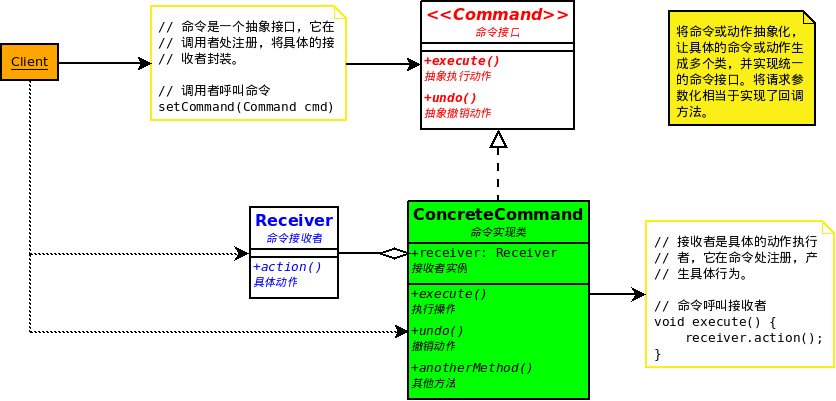

命令模式-Command Pattern
将请求封装成对象，这可以让你使用不同的请求、队列，或者日志请求来参数化其他对象。命令模式也可以支持撤销操作。

OO基础
- 抽象
- 封装
- 多态
- 继承
OO原则
- 封装变化
- 多用组合，少用继承。
- 针对接口编程，而不是实现编程。
- 为交互对象之间设计松耦合。
- 对扩展开放，对修改关闭。
- 依赖抽象，而不要依赖具体类。
适用性
- 抽象出待执行的动作以参数化某对象，你可用过程语言中的回调(callback)函数表达这种参数化机制。所谓回调函数是指函数先在某处注册，而它将在稍后某个需要的时候被调用。Command模式是回调机制的一个面向对象的替代品。
- 在不同的时刻指定、排列和执行请求。一个Commad对象可以有一个与初始请求无关的生存期。如果一个请求的接收者可用一种与地址空间无关的方式表达，那么就可将负责该请求的命令对象传送给另一个不同的进程并在那儿实现该请求。
- 支持撤销操作。Command的Excute操作可在实施操作前将状态存储起来，在取消操作时这个状态用来消除该操作的影响。Command接口必须添加一个Unexcute操作，该操作取消上一次Excute调用的效果。执行的命令被存储在一个历史列表中。可通过向后和向前遍历这一列表并分别调用Unexcute和Excute来实现重数不限的“撤销”和“重做”。
- 支持修改日志，这样当系统崩溃时，这些修改可以被重做一遍。在Command接口中添加装载操作和存储操作，可以用来保持变动的一个一致的修改日志。从崩溃中恢复的过程包括从磁盘中重新读入记录下来的命令并用Excute操作重新执行它们。
- 用构建在原语操作上的高层操作构造一个系统。这样一种结构在支持事务(transaction)的信息系统中很常见。一个事务封装了对数据的一组变动。Command模式提供了对事务进行建模的方法。有一个公共的接口，使得你可以用同一种方式调用所有的事务。同时使用该模式也易于添加新事务以扩展系统。